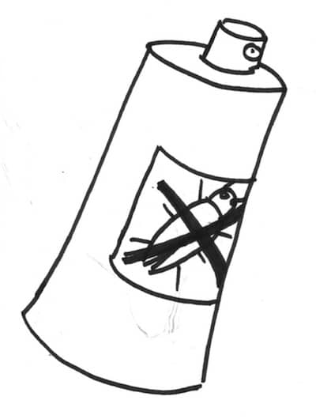

This is the fourth post on a series of 5 about the improvement kata. If you haven’t read the beginning of the story, I recommend you start from part 1.
We ended the previous post with a target condition :
We’d like to be done with bugs within 3 months.
Currently, 1 pair (one quarter of the team) is constantly busy fixing bugs. If we manage to find a way to spend less time on bugs, we can expect a productivity increase of about 25%.

Next step in the improvement kata is to run Plan-Do-Check-Act (PDCA) experiments. Before you run experiments, you need ideas !
Idea 1 : Stop exploratory testing
We’d like to spend less time fixing bugs. At the same time, we know that we started to spend more time on bug fixing when we started exploratory testing.
We thought that one easy way to do less bug fixing was to stop exploratory testing altogether ! We listed the pros and the cons of exploratory testing.
The obvious cons
- It discovers bugs. Fixing these bugs costs time. We’d rather spend this time delivering new features
But the pros are many
- It helps us discover technical debt and improve the quality of our code, which makes us faster in the long run. Clean code has less bugs. When we discover many bugs related to a particular region of the code, it means we should refactor it.
- It speeds up integration with other teams’ work in many ways :
- It saves other teams from debugging their time away trying to use broken things
- Fixing bugs is sometimes just a matter of providing clear ‘not supported yet’ errors. Doing this saves a tremendous amount of time to other teams.
- Avoids blocking other teams as they wait for your bug fixes
- Reduces interruptions from bug reports and fixes bouncing between teams.
- By reducing unplanned rework, it makes any commitment you do more likely
In the light of all this, stoping exploratory testing did not seem like a great idea. We had to find something else.
💡Saving time by not fixing bugs might not be a great idea
Idea 2 : Review what a bug is
We needed to find a middle ground between where we were and stoping exploratory testing. We wanted :
- not to let bugs escape
- raise clean errors on things that are not yet supported
- prevent scope creep from bug reports
A few months ago, when we decided to prioritize bugs before features, we had defined a definition for bugs. Here is what it looked like. Something is a bug if any one of these is true :
- It used to work
- It corrupts data
- It silently returns wrong results
- It returns an internal error (like an internal exception stack trace)
We examined this definition, discussed, and decided to dump the first clause. Our logic was that it was very difficult to know if something had already been working. The best thing we could refer to was our extensive suite of tests. If we discover that something is not working, it is very likely that it has never been. If it had been working, it means there was a hole in our test suite.
💡A hole in a test suite is a bug to fix
We decided to test this new bug definition for a while.
Not there yet !
We’re getting closer to the end, but you’re not done with PDCA yet.
This was post 4 in a series of 5 about the improvement kata. In the next and last post of this story you’ll learn how we ended the PDCAs for great results.